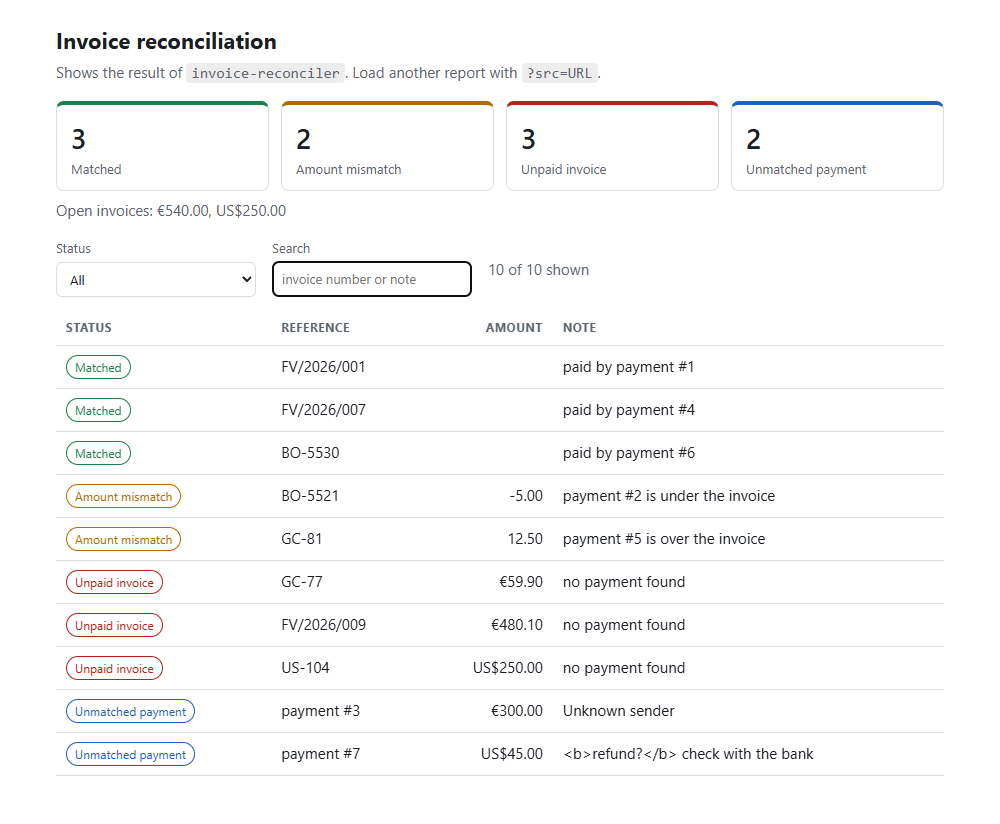

Case study · JavaScript, HTML, CSS
reconciliation-dashboard
A browser dashboard for the reconciler's report: summary cards, the money still open per currency, and a table to filter and search.
The problem
The reconciler produces a JSON report. A person reading it wants four numbers and a list: how many invoices matched, how many have a wrong amount, how many are unpaid, how many payments are unexplained, and how much money is still open in each currency. This page shows exactly that, with a filter and a search.

Design
- Logic and page are separate.
report.jsholds pure functions (flatten the report, summarise, filter, format money, validate).app.jsis only DOM glue. That is why the logic is tested with Node's built-in test runner, with no browser and no dependency. - Report data is never parsed as HTML. Everything is written with
textContent. The sample data contains a description with<b>tags on purpose, and the page shows it as literal text. - Plain ES modules: no framework, no build step, nothing to install.
- A broken report or a missing file shows a clear message instead of an empty page. Light and dark theme follow the system setting, and the table adapts to narrow screens.
The summary logic
/** Counts per status and the money still open, summed per currency in whole cents (no floating-point drift). */
export function summarize(report) {
const counts = Object.fromEntries(STATUSES.map((s) => [s, (report[s] ?? []).length]));
const sumBy = (items, field) => {
const totals = {};
for (const it of items) totals[it.currency] = (totals[it.currency] ?? 0) + cents(it[field]);
return Object.fromEntries(Object.entries(totals).map(([c, v]) => [c, v / 100]));
};
return {
counts,
total: Object.values(counts).reduce((a, b) => a + b, 0),
unpaidTotals: sumBy(report.unpaid_invoices ?? [], "total"),
unmatchedTotals: sumBy(report.unmatched_payments ?? [], "amount"),
};
}Money is summed in whole cents, so 59.90 + 40.10 is exactly 100.00 and not 99.99999999999999.
Checked in a real browser
Besides the unit tests, the page was opened in a real browser: the four cards and their counts, the status filter, the text search, the empty state, the error state for a missing file, the escaping of markup in the data, and the demo running from a sub-folder.
Tests
6 tests pass with node --test. Covered: flattening, per-status counts, money sums per currency, filters, money formatting with a fallback for unknown currency codes, and report validation.
Stack: JavaScript (ES modules), HTML, CSS, Node test runner, Git.
Source code available on request.
Next: sql-invoice-analytics →